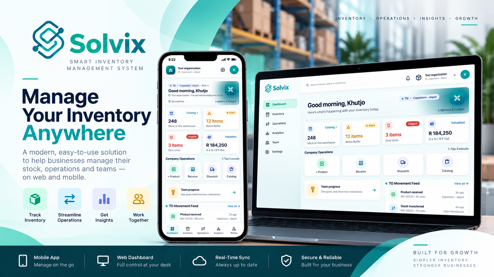

Solvix StockFlow is a warehouse operations product in development, pairing a web dashboard with an Android app. Together, the two surfaces bring inventory, receiving, dispatch, transfers and stock history into one product, with barcode checks and approval gates around critical stock changes.
StockFlow is a paired web dashboard and Android app, designed to work together as one warehouse operations product. Both surfaces are in development. The current Android repository includes local sample inventory data as workflows are built and checked through automated tests and Android builds; this is not presented as a live customer deployment.
Warehouse work is a chain of decisions about physical goods: what has arrived, what has been checked, what is available, what is leaving, and what should happen when stock moves between locations. A quantity only means something when the team can understand where it is held and why it changed.
Solvix StockFlow is being developed as a warehouse operations platform for inventory, receiving, dispatch and stock movement. The Android experience is designed around the people handling those tasks, with company and warehouse context carried through the screens and verification steps connecting activity on the floor to the inventory record.
The hard part of inventory software is not simply displaying a number. A receipt should not increase available stock before the delivery has arrived and been checked. A dispatch should not reduce stock while the wrong item is still on the pick list. A transfer should not make goods appear at their destination before the receiving team confirms them. StockFlow's central design principle is to make those transitions explicit.
Every stock change should have a clear location, a deliberate approval point and a record the team can follow.
The brief therefore has two connected goals: make common warehouse workflows usable on Android, and make the inventory history more trustworthy by tying quantity changes to verified operational steps. That gives a team a more useful answer to both “what is in this warehouse?” and “how did it get that way?”
Recording a delivery is not the same as confirming it. Arrival, item verification and approval need to precede a stock increase.
Dispatch teams need to verify the item being picked against the order before it proceeds for review.
Stock belongs to a company and a warehouse. A useful view keeps the active location clear and quantities scoped accordingly.
When quantities move, a movement record helps the team understand the change rather than treating the latest count as unexplained fact.
StockFlow models receiving, dispatch and transfers as sequences of actions with checkpoints. The checkpoints distinguish between a request being raised, goods being physically handled, and a final stock change being approved.
A receipt starts with a warehouse, product, quantity and delivery reference. Arrival can be confirmed, the product barcode checked, and the request reviewed. Stock is added only after the required verification and approval steps.
A dispatch manifest describes what is being gathered and where it is going. Picked items are scanned against the manifest, staged for review, and approved before an outbound movement is completed.
An approved outbound transfer reduces stock at the source. The destination receives its stock only after arrival, item verification and inbound approval.
If an inbound request is rejected, it does not increase on-hand stock. Approval gates protect the inventory ledger from recording goods that have not passed review.
This sequence gives the warehouse team a practical trail through the work. A pending receipt remains pending until its checks are complete. A dispatch can show picking progress, staging and outbound approval. A transfer remains in motion between two locations until the receiving side verifies the arrival.
The workflow tests cover these important boundaries, including the cases where the process must stop: a receipt cannot be approved before required arrival confirmation, a wrong barcode does not pass verification, and a rejected receipt does not change the stock count.
The mobile app brings warehouse context into the everyday inventory view. Products are associated with a company and warehouse, and the active warehouse selection scopes the stock and movement information being reviewed. When a business holds the same SKU at several sites, an operator needs to know which location the displayed quantity belongs to.
Product records include identifiers such as SKU and barcode, as well as stock thresholds and product details. Inventory screens surface on-hand levels and stock status, while product details and adjustment flows support deeper inspection and correction. A barcode scanner can be opened from key inventory workflows to help the operator find or verify the item in hand.

The supporting tools extend beyond counting. The repository includes warehouse and supplier management, analytics, movement history, stock audits and reasoned stock adjustments. An audit compares physical counts with the ledger; an adjustment records why a quantity differs from the previous count. Together, these features give an operator more context than a single on-hand figure.
Teams can also switch the active warehouse and company context. The implementation and tests treat those boundaries as important: a warehouse selection should show its own stock, and changing company should not expose the previous company's inventory.
The main mobile project is an Android application built with .NET MAUI and Blazor Hybrid, using C# for its models, session state and inventory operations. The interface is organised into dedicated pages for inventory, warehouses, receiving, approvals, dispatch, audits, adjustments, analytics and the movement feed.
The code separates product and workflow models from the inventory service that applies operations and updates the current session. That makes workflow rules testable without driving each scenario through the device interface, while giving the app a consistent place to enforce warehouse scope and approval requirements.
The repository also contains the StockFlow web dashboard under web/, a PHP and MySQL application with Firebase configuration and staff and admin experiences. Together with the Android app, it forms the paired dashboard-and-mobile product: the dashboard supports broader staff and admin visibility while the mobile experience serves warehouse work on the floor. The current Android implementation initializes its ledger and sample company data locally while the integrated experience remains in development. This describes the repository's present build state, rather than a claim that shared live inventory is already available.
Represent companies, warehouses, products, movements, inbound requests and dispatch orders so common work has explicit states and records.
Bring warehouse selection, inventory browsing, barcode checks, receiving, dispatch and review queues into a mobile-first application.
Keep receipt, dispatch and transfer changes behind the verification and approval conditions required by each flow.
Run automated service and workflow tests and compile the Android target through GitHub Actions as mobile code changes.
The repository includes a .NET 10 and xUnit test project for the mobile inventory service. Coverage focuses on high-consequence stock transitions: warehouse separation, receipt verification and approval, rejection without a stock change, staged dispatch, outbound approval, warehouse transfer, stock removal, sign-in and company isolation.
GitHub Actions defines a Mobile app checks workflow. It runs for pushes and pull requests that touch the mobile app, its tests or the workflow file, and can also be started manually. One job runs the inventory and workflow tests in Release configuration. A second installs Java 17 and .NET 10, restores the MAUI Android workload, and builds a signed Android APK. The workflow uploads the package as the Solvix Sims APK artifact.
The latest recorded run at the time of this update, GitHub Actions run #8 on 19 October 2026, completed successfully: both the inventory/workflow tests and Android build jobs passed.
That is engineering evidence that the tested mobile workflows pass their automated checks and that the Android app compiles into a package in CI. It does not establish that the app has been released to customers, connected to a live shared inventory service, or validated in production warehouse operations.
Solvix StockFlow is in development. The repository contains an Android application with inventory and warehouse workflows, an automated test suite, and a CI build that produces an APK artifact. Those are concrete engineering milestones; a production release and customer operation remain separate steps.
The product is designed around a web dashboard and Android app working together. In the current repository, the Android app is still seeded with local sample company and inventory data as that integrated experience is developed. Shared production data and a customer release should therefore not be assumed from the current build or its passing CI checks.
The app contains inventory, receiving, dispatch, transfer, warehouse, audit and movement-history experiences with explicit verification and approval steps.
The latest GitHub Actions run passed both the inventory/workflow test job and signed Android build job.
The project remains under development. Shared production data and a customer release should not be assumed from the passing CI build.
There are no customer adoption or warehouse performance results to report yet. StockFlow is still being developed, and app-local sample data plus successful CI checks are not substitutes for evidence from a live deployment.
Once the product is used in real operations, this page can report on measures that matter to the warehouse team: receiving and dispatch completion, transfer accuracy, stock adjustments, inventory visibility and the time needed to reconcile physical counts. Those outcomes should be published only when they can be checked with the project team and tied to actual use.
Explore the Solvix StockFlow source repository and its GitHub Actions checks.